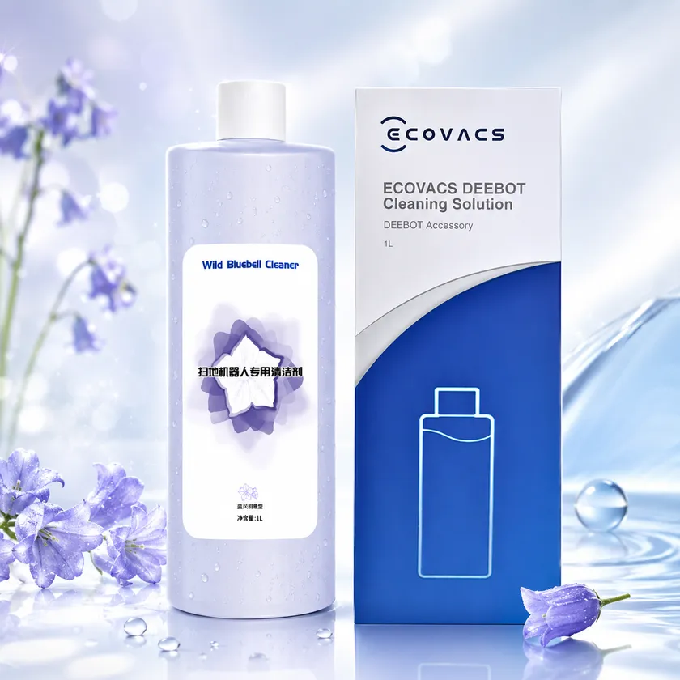
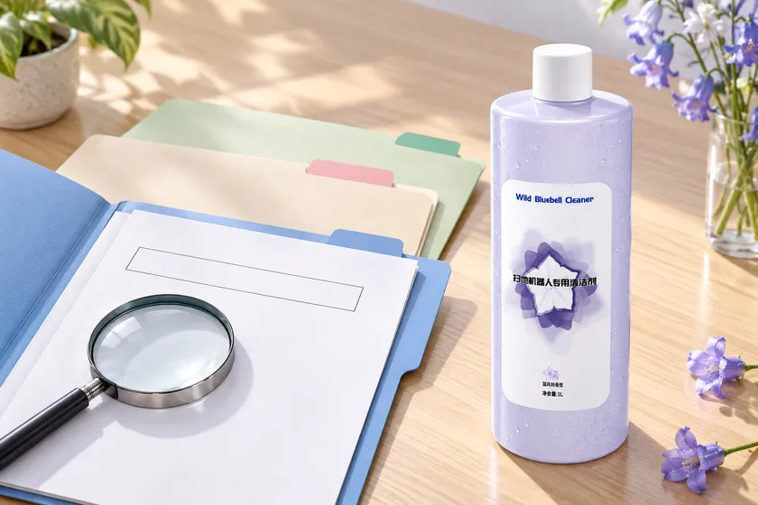
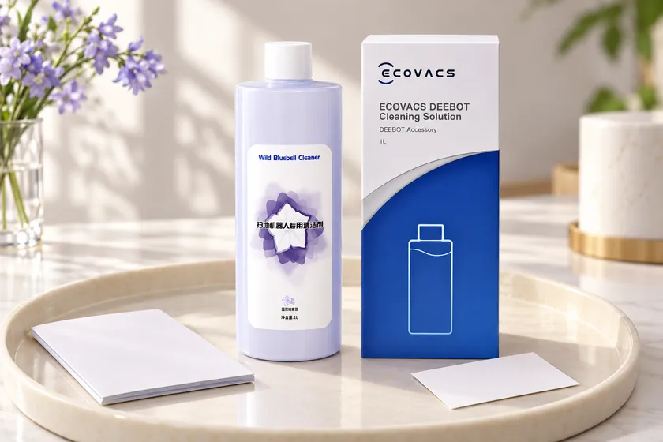

에코백스 (ECOVACS)
에코백스 X8 PRO OMNI 세제 안내가 다를 때, 설명서 모델·지역 확인법
글·구성: 제이상점 · 기종별 1:1 호환 실물 점검 · 교체 주기 비교표 · 스마트스토어 패키지 안내

핵심 관리 · 선택 체크포인트
- 판매자 안내｜제이상점이 제조사 공식 자료와 현재 자사 상품·옵션을 조사해 직접 작성했습니다.
- 에코백스 세제 투입 안내가 서로 달라 보이면 보유 기기의 전체 모델명 → 공식 지원 페이지의 모델명 → 다운로드 문서의 표지·언어를 차례로 맞춰 보세요.
- 실제 상품 병을 참고해 설명서를 찾는 작업 공간을 구성한 예시입니다.
- 공식 한국 고객지원 첫 화면에는 DEEBOT X8 PRO OMNI WHITE와 DEEBOT X8 PRO OMNI BLACK (Auto Refill and Drain)이 별도 항목으로 보입니다.
- 본체 라벨이나 앱의 기기 정보에서 확인한 모델 이름을 적고, 공식 사이트의 국가·지역이 한국으로 되어 있는지 살펴보세요.
실물 부품 디테일 · 관리 구성 이미지




부품 규격 · 점검 기준표
| 확인할 단계 | 이번에 실제 보인 정보 | 대조할 점 |
|---|---|---|
| 지원 목록 | WHITE와 BLACK 급배수형이 별도 표시 | 내 기기의 전체 이름과 같은지 |
| 모델별 페이지 | X8 PRO OMNI WHITE 제목과 자료 탭 | 다른 모델 페이지로 이동하지 않았는지 |
| 다운로드 목록 | X8 OMNI / X8 PRO OMNI, SEA 파일 표시 | 파일명뿐 아니라 표지·언어도 맞는지 |
| FAQ 상세 | 질문 제목·본문·업데이트 날짜 | 그 날짜를 내가 확인한 날짜와 구분 |
💡 교체 주기가 겹치는 필터·브러시·물걸레·더스트백은 단품 배송비를 여러 번 내기보다 에코백스 세제 세정제 기간별 세트(3개월·6개월·1년)로 미리 구비해 두면 물세척 후 24시간 교대 건조까지 끊김 없이 관리할 수 있습니다.
자주 묻는 질문 (FAQ)
Q. 에코백스 X8 PRO OMNI 세제 안내가 다를 때의 지원 목록 규격과 관리 기준은 무엇인가요?
A. WHITE와 BLACK 급배수형이 별도 표시 규격을 사용하며, 내 기기의 전체 이름과 같은지 기준으로 점검·교체하면 청소 효율을 안정적으로 유지할 수 있습니다.
Q. 에코백스 X8 PRO OMNI 세제 안내가 다를 때의 모델별 페이지 규격과 관리 기준은 무엇인가요?
A. X8 PRO OMNI WHITE 제목과 자료 탭 규격을 사용하며, 다른 모델 페이지로 이동하지 않았는지 기준으로 점검·교체하면 청소 효율을 안정적으로 유지할 수 있습니다.
Q. 에코백스 X8 PRO OMNI 세제 안내가 다를 때의 다운로드 목록 규격과 관리 기준은 무엇인가요?
A. X8 OMNI / X8 PRO OMNI, SEA 파일 표시 규격을 사용하며, 파일명뿐 아니라 표지·언어도 맞는지 기준으로 점검·교체하면 청소 효율을 안정적으로 유지할 수 있습니다.
제이상점 1:1 검수 추천 패키지 · 구매 안내
☑️ 주문 전 확인해 두면 좋은 제이상점 안심 포인트
· 기종별 1:1 전용 규격 검수: 모델명·연식에 맞는 호환·정품 구성을 검수해 오주문 불안을 줄였습니다.
· 해외직배송 미리 주문 팁: 중국 구매대행·해외직배송 상품이므로 마지막 여분 1개를 꺼내 쓰는 시점에 개인통관고유부호와 함께 여유 있게 주문해 두시면 훨씬 경제적인 비용으로 끊김 없이 교체하실 수 있습니다.
· 기종별 1:1 전용 규격 검수: 모델명·연식에 맞는 호환·정품 구성을 검수해 오주문 불안을 줄였습니다.
· 해외직배송 미리 주문 팁: 중국 구매대행·해외직배송 상품이므로 마지막 여분 1개를 꺼내 쓰는 시점에 개인통관고유부호와 함께 여유 있게 주문해 두시면 훨씬 경제적인 비용으로 끊김 없이 교체하실 수 있습니다.
📖 더 많은 가정 내 사용 스토리와 상세 후기가 궁금하시다면
📱 네이버 블로그 모바일 원문 보기 ↗